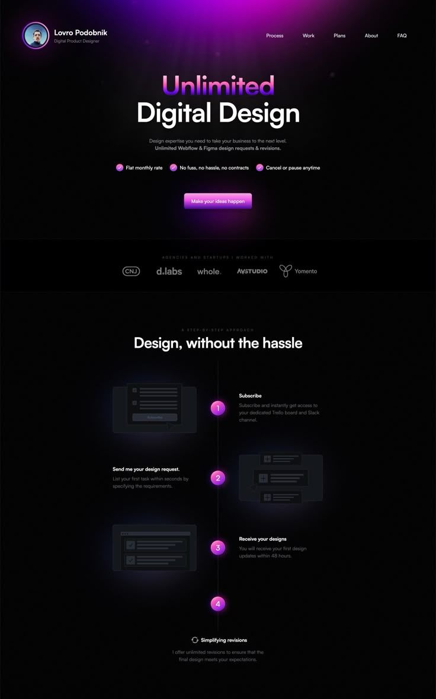
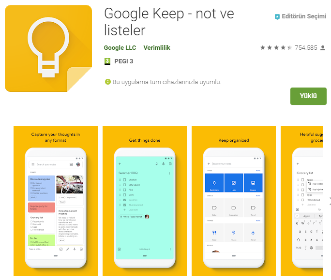

📋Ankara Üniversitesi Nallıhan MYO📋
2024-2025 Eğitim-Öğretim Dönemi
NBP128 Web Geliştirme Ortamları Uygulama Ara Sınavı
📈Becerilerim
- HTML & CSS
- JavaScript
- C++
- Python
- Photoshop
🔍Kişisel Özellikler
- Takım çalışması
- Zaman yönetimi
- Problem çözme
- Plan odaklı çalışma
- Hızlı ve verimli çalışma
🌍Yabancı Diller
- İngilizce
📝ÖN YAZIM
TUĞÇE KESKİN 24350100
Tuğçe Keskin, genç ve dinamik bir isim olarak, çeşitli alanlarda gösterdiği başarılarla tanınan bir isimdir. Kendisi, özellikle bilgisayar programcılığı ve yazılım geliştirme alanlarında etkili çalışmalarıyla bilinir. Yaratıcı ve yenilikçi projelere imza atan Tuğçe, güçlü iletişim becerileri ve stratejik bakış açısıyla sektörde hızla kendine bir yer edinmiştir. Aynı zamanda girişimcilik ruhuna sahip olan Tuğçe, farklı projelerle topluma değer katmayı hedeflemektedir. Hem profesyonel hem de kişisel olarak sürekli gelişim içinde olan Tuğçe Keskin, başarılarıyla ilham veren bir figür olmuştur.
“Programcılar, geleceği düşündükleri için sürekli olarak işleri gereğinden fazla karmaşıklaştırmaktadırlar. Geleceği boşverin. Bugün için programlayın.”
David Heinemeier Hansson
🌐YAPTIĞIM PROJELER
KİŞİSEL TANITIM SİTESİ

HAVA DURUMU SİTESİ
NOT DEFTERİ UYGULAMASI
